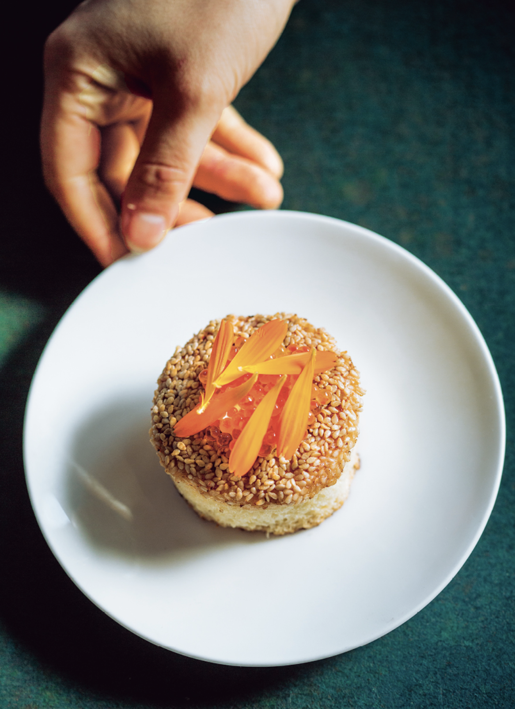

Prawn Toast

Every Chinese cookbook written for Americans that I've ever seen includes a recipe for prawn toast. It's become as American as the sliced sandwich bread with which it's made. I love the kitsch but also the mixing of cultures. I usually serve one toast per person, but once you've got them sizzling in the pan, everyone will congregate in the kitchen, so prepare for seconds.
Ingredients
Lemon Aioli
- 1 egg yolk
- 1 garlic clove, finely grated
- Finely grated zest of ½ lemon, plus 2 tsp fresh lemon juice
- ½ tsp kosher salt
- ½ cup / 120ml grapeseed oil
Prawn Mousse
- 2 garlic cloves, peeled
- 8 oz / 225g peeled and cleaned large shrimp
- 2 Tbsp egg white (whisked before measuring)
- ½ tsp toasted sesame oil
- ¼ tsp light soy sauce (生抽, sāng chāu)
- ½ tsp cornstarch
- 2 Tbsp finely diced uncooked bacon
- 2 Tbsp finely diced jicama
- 2 Tbsp thinly sliced (crosswise) green onions
- “2 tsp peeled and minced ginger
- ¼ cup / 30g raw white sesame seeds
- Four 1-inch-thick slices Milk Bread (this page)
- 2 Tbsp rendered pork or duck fat
- Shrimp Salt (see this page) for dusting
- Tbsp cured trout roe or caviar
- Edible marigold flower petals or soft herbs (such as tarragon, parsley, or chervil) for garnishing (optional)
Steps
-
To make the aioli: In a medium bowl, whisk together the egg yolk, garlic, lemon zest, lemon juice, and salt. While whisking, slowly stream in the grapeseed oil a little bit a time until thick and emulsified. Transfer to an airtight container and store in the refrigerator for up to 5 days.
-
To make the mousse: Bring a small saucepan of water to a boil. Add the garlic and boil until just knife-tender, about 2 minutes. Drain the garlic, finely chop, and place in a medium bowl
-
Butterfly half of the shrimp, then cut into medium dice. Add to the garlic.
-
In a food processor fitted with the blade attachment, pulse the remaining shrimp until coarsely chopped. With the motor running, pour in the egg white, sesame oil, and soy sauce and process into a smooth paste, stopping and scraping down the sides of the bowl occasionally. “Don't pulse further or the emulsion will break. Add the cornstarch and process briefly until just combined. Alternatively, hand mince the shrimp with a cleaver to a smooth paste, then stir in the egg white, sesame oil, soy sauce, and cornstarch.
-
Add the shrimp paste to the chopped shrimp. Then add the bacon, jicama, green onions, and ginger and stir to combine.
-
Put the sesame seeds in a small dish. Using a round cutter, cut each slice of bread into a 2½-inch circle (or just trim into a square) with no crust. Spread the prawn mousse onto the bread slices in a thick, even layer to the edges. Dip each toast, mousse-side down, in the sesame seeds to coat well.
-
In a medium nonstick frying pan over medium heat, warm the rendered fat until shimmering. Place the toasts seed-side down in the pan and cook until the sesame seeds are dark golden brown and the mousse is firm and cooked through, about 10 minutes. Flip the toasts, slide them around the pan a little so that the bread soaks up some of the fat, and cook until the bottom of the bread is golden brown and toasted, about 3 minutes more. Transfer the toasts to a serving plate.
-
Garnish the toasts with a dollop of lemon aioli, a light dusting of shrimp salt, some trout roe, and flower petals, if desired. Serve immediately.